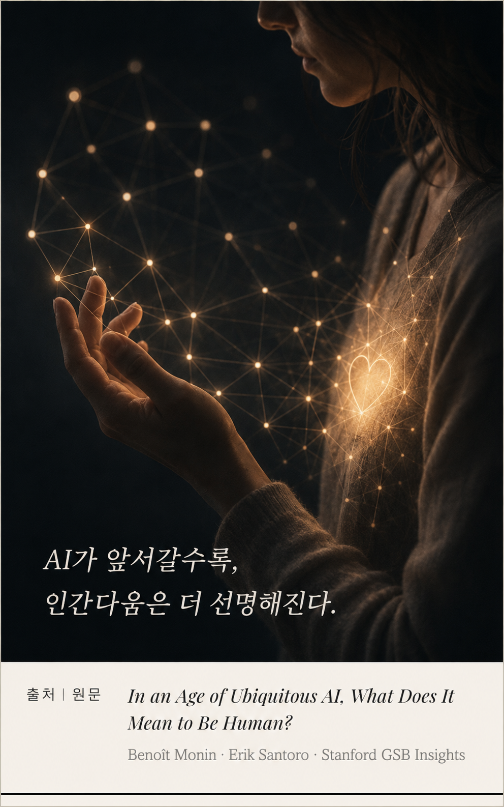

Section Ⅰ · The Threat흔들리는 인간의 자리
주머니 속 기계가
나보다 잘할 때
신약을 설계하고, 글을 쓰고, 협상을 하고, 음악을 작곡한다. 오랫동안 '인간만의 것'이라 믿었던 일들을 이제 AI가 해낸다. 바둑 세계 챔피언을 꺾은 알파고는 그 신호탄이었다.
Stanford GSB의 조직행동 교수 브누아 모냉(Benoît Monin)은 묻는다. "주머니 속 휴대폰이 갑자기 이 모든 것을 당신보다 더 잘하게 된다면?" 이것은 단순한 기술 뉴스가 아니라, 인간이 스스로를 정의해 온 방식을 흔드는 실존적 질문이다.
"인류는 늘 스스로를 우주에서 유일한 존재로 여겨왔다."Humanity has always seen itself as unique in the universe. — Benoît Monin, Stanford GSB
Section Ⅱ · The Defensive Turn방어적 반응
사람들은
'AI가 아직 못하는 것'을 말한다
연구진이 관찰한 흥미로운 반응이 있다. AI의 새로운 이정표를 이야기할 때, 대화는 어김없이 '그래도 AI가 아직 못하는 것'으로 흘러갔다. 기계의 능력을 진심으로 받아들이기보다, 스스로를 안심시키려는 방어적 태도였다.
"이 이정표들을 이야기할 때, 사람들은 종종 방어적이었다." — Erik Santoro, Stanford
모냉과 산토로는 여기서 사회정체성 이론(Social Identity Theory)을 떠올린다. AI가 인류에게 새로운 '비교 대상(Reference Group)'이 되면서, 인간은 자신을 규정하는 기준을 사회적 비교를 통해 다시 조정하기 시작했다는 것이다.
Section Ⅲ · The StudyAI 효과, 실험으로 증명하다
AI를 마주한 사람은
무엇을 '인간적'이라 답했나
연구진은 약 1,000명을 대상으로 인간의 속성 20가지를 제시했다. 절반은 AI도 할 수 있는 것, 절반은 인간 고유의 것이었다. 그리고 한 집단에는 '나무'에 관한 글을, 다른 집단에는 'AI의 발전'에 관한 글을 읽혔다.
vs AI
주목할 점은 그들이 공유 능력을 깎아내리지는 않았다는 것이다. 산토로의 말처럼, "인간이 더 이상 논리에서 최고가 아니어도, 논리가 인간 본성에서 덜 중요하다고 말하진 않았다." 인간은 자신의 자리를 빼는 방식이 아니라 더하는 방식으로 지킨다 — 인간 고유의 영역을 더 소중히 여기면서.
Section Ⅳ · The Reordering공감의 재부상
인지 노동이 흔해질수록,
값이 오르는 능력
이 발견은 조직과 경제에 직접적 함의를 던진다. AI가 인지 노동(계산·분석·작성)을 상품처럼 흔하게 만들수록, 기계가 대체할 수 없는 인간적 역량의 값이 오른다.
"유능한 AI가 어디에나 있는 세계에서, 대인관계 역량은 점점 더 고용주가 찾는 능력이 될 것이다." — Benoît Monin, Stanford GSB
Section Ⅴ · Coda인간의 자리
기계가 유능할수록,
인간다움이 값지다
모냉은 말한다 — 2022년 연구 발표 이후 AI가 폭발적으로 발전한 지금, 'AI 효과'는 이미 사회 전체에서 훨씬 넓게 일어나고 있을 것이라고. 사람들은 기계가 잘하는 것에서 물러나, 인간만이 할 수 있는 것 — 공감, 도덕, 관계, 그리고 의미 — 으로 자신의 자리를 옮기고 있다.
리더에게 이것은 분명한 방향을 준다. AI가 인지 노동을 흡수하는 시대에 조직의 차별화는 더 빠른 계산이 아니라, 구성원의 인간다움을 알아보고 키우는 능력에서 나온다. 사람을 이해하고(Vol. 06), 그 인간다움을 배양하는 것 — 그것이 AI 시대 리더십의 남은 과제다.